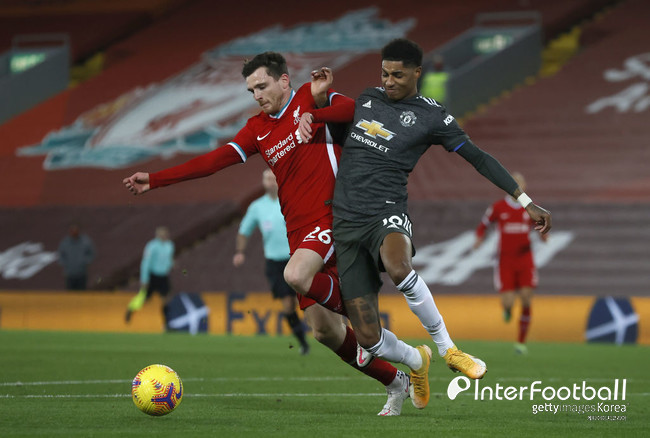

리버풀이 선제골로 리드를 잡았다. 전반 5분, 피르미누의 전진 패스가 살라를 거쳐 케이타에게 연결됐다. 케이타는 일대일 찬스에서 침착하게 마무리하며 골망을 갈랐다. 리버풀의 맹렬한 공세가 이어졌다. 전반 6분, 케이타의 패스를 받은 피르미누가 슈팅으로 연결했지만 데 헤아 선방에 걸렸다. 2분 뒤에는 살라가 박스 안에서 수비를 따돌린 후 때린 슈팅이 빗나갔다. 맨유가 반격에 나섰다. 전반 10분, 래시포드가 아크 정면에서 때린 슈팅이 골문을 살짝 벗어났다. 리버풀이 다시 흐름을 가져오면서 추가골을 뽑아냈다. 전반 13분, 아놀드의 땅볼 크로스가 문전 앞으로 연결됐고 조타가 몸을 던져 밀어 넣었다. 맨유가 추격에 나섰다. 전반 22분 쇼와 28분 그린우드의 슈팅은 빗겨 나갔다. 리버풀이 흐름을 다시 가져왔다. 전반 32분, 살라가 각도가 없는 상황에서 일대일 찬스를 맞았으나 데 헤아 선방에 막혔다. 리버풀이 격차를 더 벌렸다. 전반 38분, 케이타가 크로스를 올렸고 골문 앞으로 쇄도하던 살라가 가볍게 골망을 갈랐다. 전반 추가시간에는 조타의 패스를 건네받은 살라가 골문 구석을 겨냥해 마무리했다. 전반은 리버풀이 4-0으로 크게 앞선 채 종료됐다. 맨유가 하프타임 때 교체를 단행했다. 그린우드를 빼고 포그바를 투입했다. 하지만 오히려 리버풀이 추가 득점을 터뜨렸다. 후반 4분, 헨더슨의 환상적인 아웃프런트 킥이 박스 안으로 연결됐고, 살라가 일대일 찬스에서 차분하게 성공시켰다. 맨유가 만회골을 뽑아냈다. 후반 7분, 매과이어의 롱패스를 받은 호날두가 박스 안에서 수비 두 명을 따돌린 후 반대편 골문 구석에 꽂아 넣었다. 그러나 오프사이드가 선언됐다. 맨유에 최대 악재가 발생했다. 후반 15분, 포그바가 케이타의 다리를 향해 거친 태클이 들어갔고, VAR 판독 끝에 다이렉트 퇴장을 당했다. 리버풀은 케이타가 부상으로 빠지면서 체임벌린이 그라운드를 밟았다. 맨유가 변화를 가져갔다. 후반 16분, 래시포드와 브루노가 나오고 카바니와 달로트가 들어갔다.
